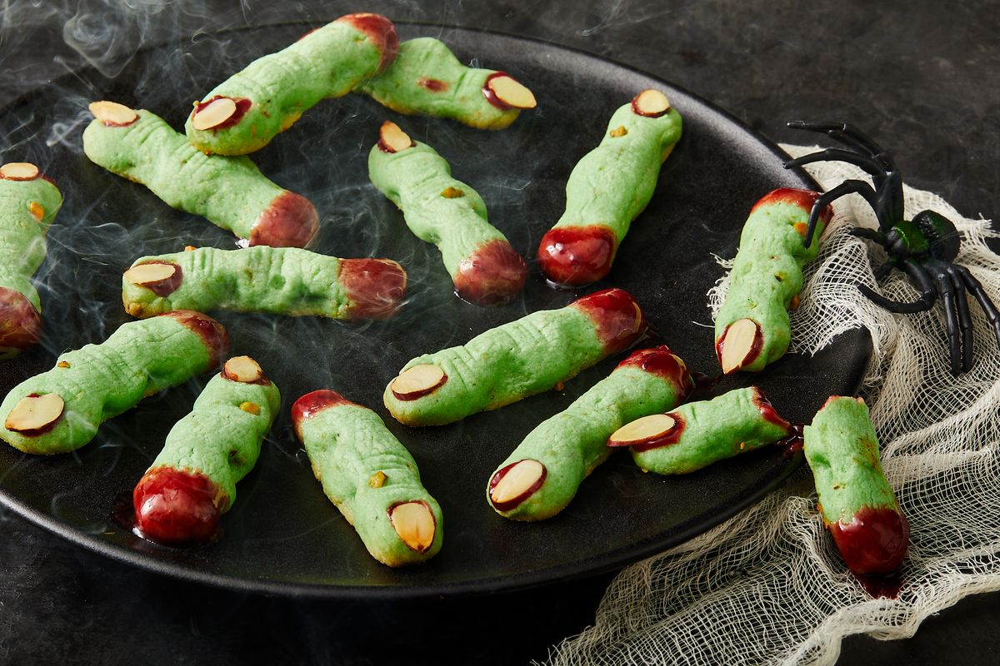

Witch Finger Cookies

Description
Ghouls, goblins, and witches to the front, please! Spooky season is here, and we’re celebrating in style with these scary delicious witch finger cookies. A witch finger cookie is exactly what it sounds like: a shortbread cookie shaped into a severed finger and adorned with an almond nail and a bit of blood-red jam.
For a little added texture and flavor, I added chopped pistachios. As it turns out, pistachio chunks also make for great witch warts. This recipe requires a little effort and some freezer time, but it's worth the effort. The finished cookies make for a gruesome, eye-catching dessert table centerpiece, but these cookies aren’t all flash. They’re nutty, tender, and perfectly sweet.
Ingredients
- 1 1/4 c. (142 g.) powdered sugar
- 1 c. (2 sticks) unsalted butter, softened
- 1 large egg
- 1 tsp. almond extract
- 1 tsp. pure vanilla extract
- 5 to 6 drops green food coloring
- 2 3/4 c. (330 g.) all-purpose flour
- 1 tsp. kosher salt
- 1/2 c. finely chopped pistachios (about 70 g.), plus more for decorating
- 3/4 c. sliced almonds (about 85 g.)
- 1/2 c. (135 g.) cherry, strawberry, or raspberry jam
Steps
- In the large bowl of a stand mixer fitted with the whisk attachment (or in a large bowl using an electric mixer) on medium speed, beat powdered sugar and butter until pale and fluffy, about 2 minutes. Add egg and continue to beat until incorporated and fluffy, about 1 minute more. Add almond extract, vanilla extract, and food coloring and beat until combined.
- In a small bowl, whisk flour and salt. Add to butter mixture and beat on low speed until just combined. Fold in pistachios. Cover bowl with plastic wrap and refrigerate at least 30 minutes or up to 2 days.
- Line 2 rimmed baking sheets with parchment paper. Remove one-quarter of dough from refrigerator and portion into 12 to 13 (1-tablespoon) balls. Roll each ball between your palms until it starts to form a finger shape, about 3"-by-1/2", or the length of your pinky finger but slightly thinner. Arrange logs on prepared sheet and press an almond slice into each, where the nail would be on a finger. Carefully pinch dough just below almond and halfway down log to create a knuckle. Using a sharp knife, carve horizontal lines of varying lengths into knuckle. Place 1 or 2 pistachio pieces in finger to make warts. Repeat with remaining dough. Freeze 30 minutes.
- Preheat oven to 375°. Bake, rotating trays front to back halfway through, until edges are firm and tops of cookies are dry, 7 to 9 minutes, Let cool slightly.
- Gently lift off almond fingernail. Add a tiny dab of jam to tip of finger, then replace almond fingernail, pressing down to make jam ooze out. Spread jam onto bottom of each finger. Let cookies cool completely.
Back to Homepage